Building the screw advance box joint jig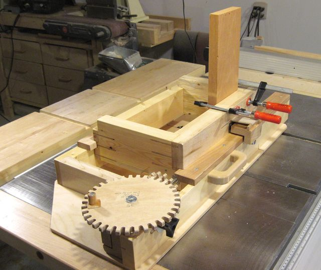
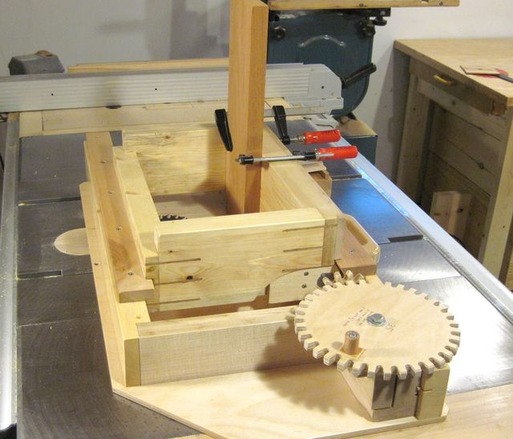
I have organized the pictures and instructions for this jig by category. However, when building this jig it's best to check parts against other parts so it's best to build all the parts at the same time.
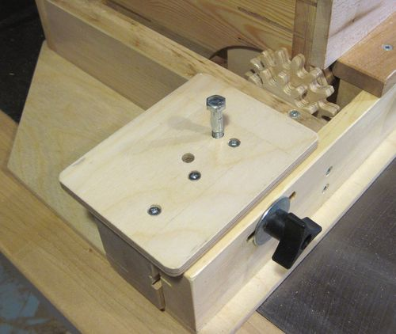 This is the gear mounting block. The gear mounting block has some cleaver elements to it. The block can be mounted at two different heights for meshing with the 12-tooth and 16-tooth gears. It also slides in and out to accommodate different sizes of gears. The gears are mounted by pushing the bolt into one of two holes on the top. On tightening the knob the block also clamps down on the bolt holding the gear, locking it in place.
The block has two holes for the bolt holding the gear. For the smaller primary gears the hole
on the right is used. The hole on the left is for the larger gears.
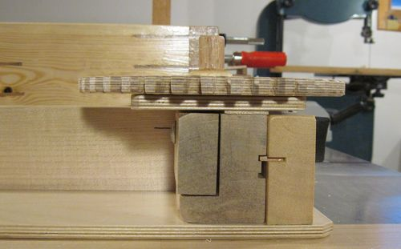 This picture shows how the block mounts. The block is made of a solid piece of maple. It has two grooves cut into it which mesh with a small piece of maple that is inset into the frame. I cut away part of the material between the two slots to make it easier to raise and lower the block without undoing the fastening knob quite as far.
You can also see a shim that I had to put between the block and
the piece of plywood that mounts on it. Giving the gears a bit more
space makes them less likely to jam. I corrected the dimensions in the
plans to make this shim unnecessary.
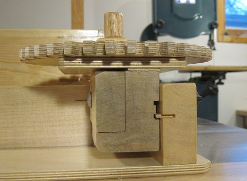 This photo shows the block placed in the upper position.
You can also see a slight taper in the primary gear teeth. I tapered the teeth
a little bit to make them jam less. Setting the bandsaw at an
angle when you cut the teeth makes for less work fitting the gears together later.
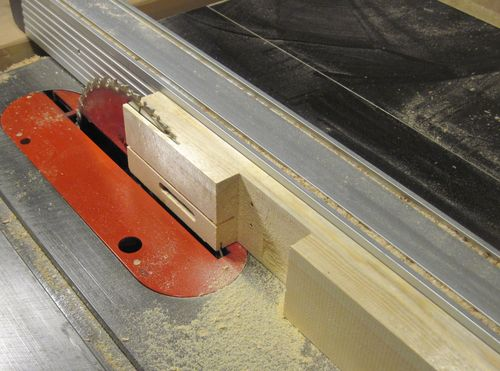 Most of the steps for making the frame are pretty straightforward, so I didn't end up taking many photos of it. This photo shows trimming off part of the frame to make room for the gear mounting block. I had already cut the slot for the screw mount and a groove in it for the mount. I cut the slot by drilling a series of 3/8" holes next to each other and chiseling out in between. A drill press and a brad-pint drill bit are essential for doing this. You could also cut the slot with a mortising machine or with a router. The groove for the gear mount is just one saw kerf wide and was made on the table saw. 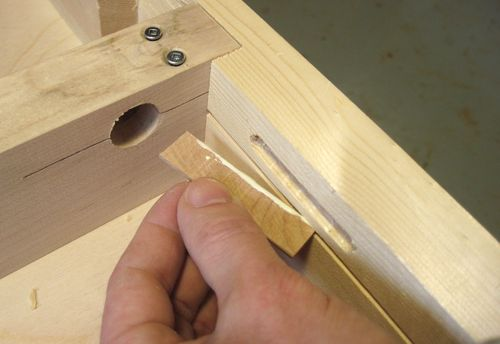 I glued these bits of wood into the groove to mesh with the grooves in the gear mounting block. These bits of wood are cut with the grain side to side so that the grain faces in and out of the slot. That way, the part that protrudes out of the groove is quite strong even though it's only one sawblade kerf thick. A seemingly obvious thing to do would be to just make the piece wider, but then the grooves in the block it meshes with would also need to be wider, and the material between the grooves would be weakened. 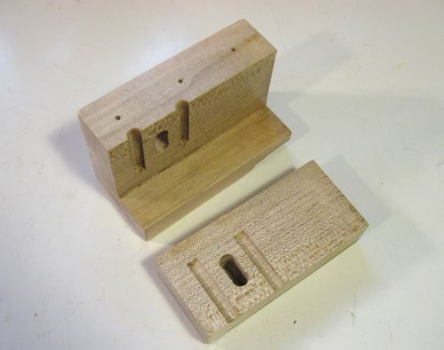 This is the core of the mounting block. I drilled all the holes in it first and then cut the smaller section out on the bandsaw. 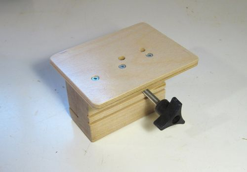 I used a 4" long 5/16" carriage bolt for mounting. The square part near the head of the carriage bolt doesn't turn freely in the slot so that the bolt doesn't spin as you start tightening the mounting knob. 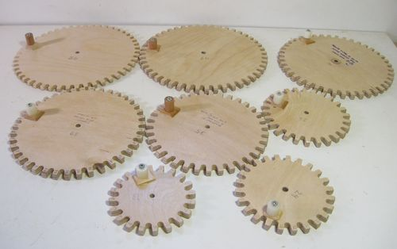 I made quite a lot of primary gears for the jig. The primary gears are made with the same technique as the gears in the gear cluster. Every time I find myself needing another odd spacing interval that I can't achieve with the gear sets that I already made I just end up making yet another primary gear to suit.
Figuring out whether it's possible to get a desired interval with the gears
you already have can be quite a challenge, so I made this
calculating form for generating tables
of intervals that can already be achieved. It's best if you print this
form after filling it out so that you don't have to go back to the computer
to figture out which gear sets to use.
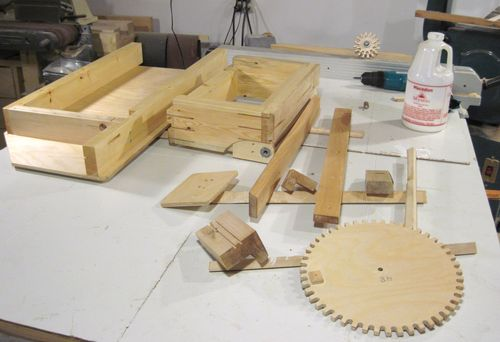 Finally, it helps to put a few coats of varnish onto everything. Wood jigs are just too easy to get dirty and wood is hard to clean. I don't like dirty jigs, but then again, I photograph a lot in my workshop so maybe it matters more to me than it does to you.
If you do varnish your jig, it helps to varnish it before you mount the
metal guidebar. I always get really dirty hands working with steel and
having the jig already protected by varnish meant that I didn't have to
worry about touching the wood with dirty hands.
Next: Attaching the guidebar
|